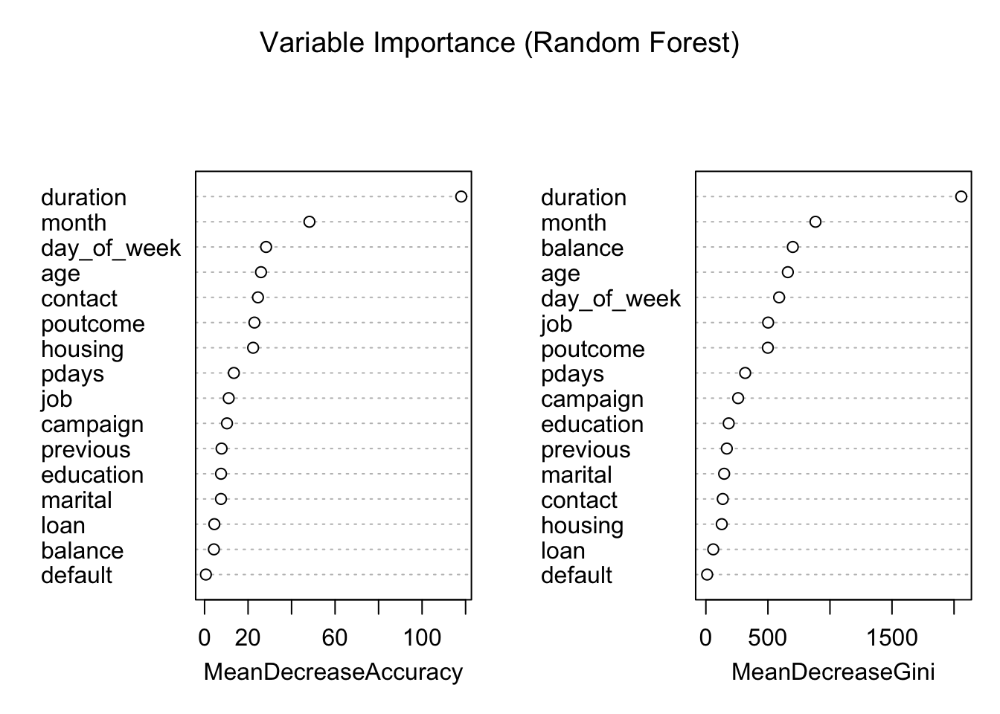
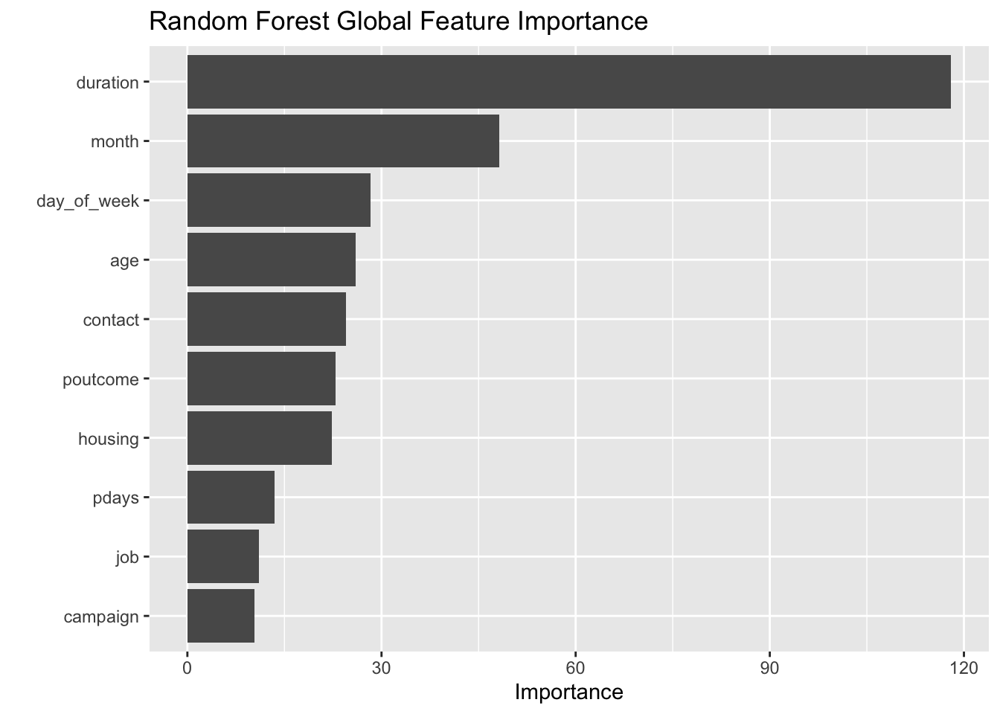
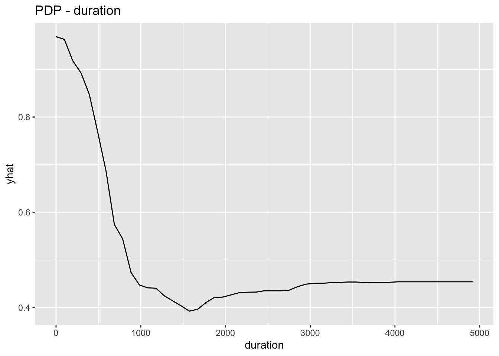
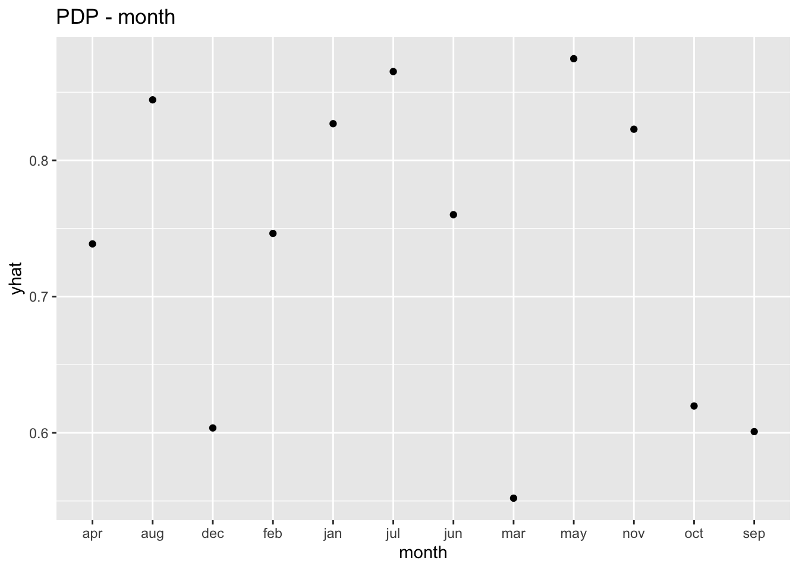
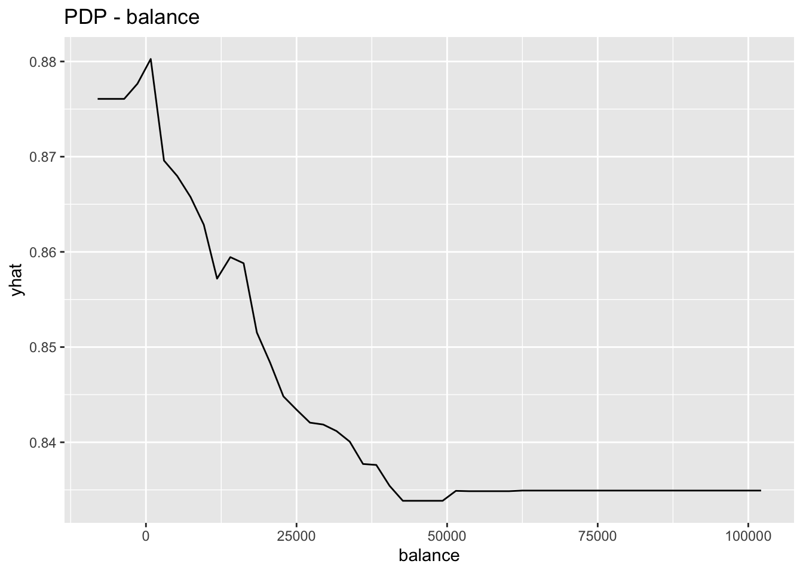
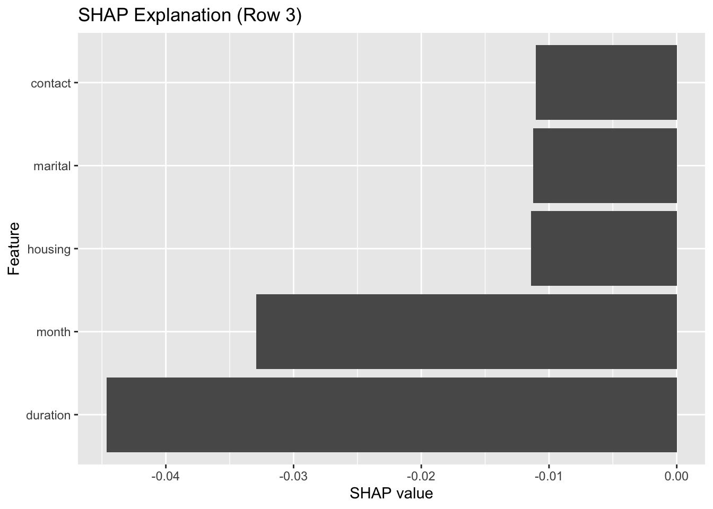
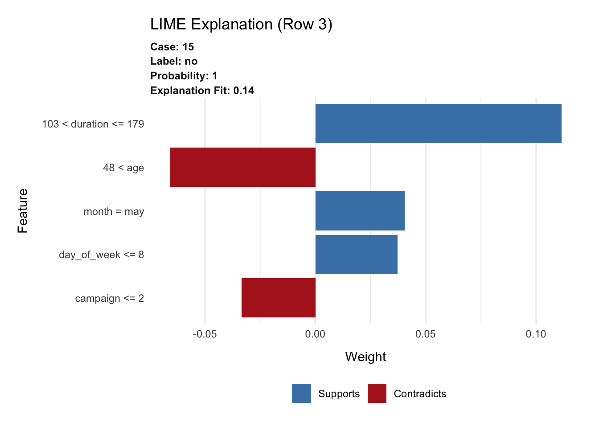
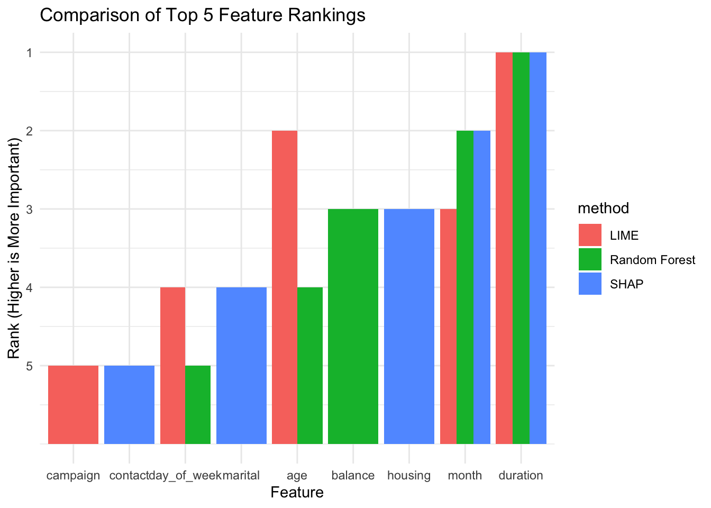

# Global feature importancevarImpPlot(rf_model, main ="Variable Importance (Random Forest)")

vip::vip(rf_model, num_features =10, geom ="col") +ggtitle("Random Forest Global Feature Importance")

5. PDP for Top Features
# Top 3 important features from RFtop_vars <-names(sort(rf_model$importance[, "MeanDecreaseGini"], decreasing =TRUE))[1:3]# PDPs for top 3 features using autoplot (which returns ggplot object)for (var in top_vars) { pd <- pdp::partial(rf_model, pred.var = var, train = train_X, prob =TRUE)print(autoplot(pd) +ggtitle(paste("PDP -", var)))}



6. Faceted PDPs for Numeric Features Only
# Extract numeric featuresnumeric_vars <-names(train_X)[sapply(train_X, is.numeric)]# Collect PDPs in long formatpdp_long_list <-lapply(numeric_vars, function(var) { pd <- pdp::partial(rf_model, pred.var = var, train = train_X, prob =TRUE)colnames(pd)[1] <-"x"# rename feature column to "x" pd$feature <- var # store original feature name for faceting pd})# Combine all PDPs into one data framepdp_all <-bind_rows(pdp_long_list)# Faceted PDP plotggplot(pdp_all, aes(x = x, y = yhat)) +geom_line() +facet_wrap(~feature, scales ="free_x") +labs(title ="Faceted PDPs for Numeric Features",x ="Feature Value",y ="Predicted Probability (yes)" )
# Convert SHAP values to data frame for plottingshap_df <- shap_values %>%as.data.frame() %>%t() %>%as.data.frame() %>% tibble::rownames_to_column("feature") %>%rename(shap_value = V1) %>%arrange(desc(abs(shap_value)))# Plot top 5 SHAP featuresggplot(shap_df[1:5, ], aes(x =reorder(feature, shap_value), y = shap_value)) +geom_col() +coord_flip() +ggtitle("SHAP Explanation (Row 3)") +xlab("Feature") +ylab("SHAP value")

9. LIME Explanation
library(lime)# Tell lime how to handle randomForest modelsmodel_type.randomForest <-function(x, ...) {return("classification")}predict_model.randomForest <-function(x, newdata, type, ...) {data.frame(predict(x, newdata = newdata, type ="prob"))}# Ensure input is a data.frametrain_X_df <-as.data.frame(train_X)test_X_df <-as.data.frame(test_X)# Create explainerexplainer_lime <-lime(train_X_df, rf_model)
Warning: pdays does not contain enough variance to use quantile binning. Using
standard binning instead.
Warning: previous does not contain enough variance to use quantile binning.
Using standard binning instead.
# Explain one test instanceset.seed(123)lime_result <- lime::explain(x = test_X_df[3, , drop =FALSE],explainer = explainer_lime,n_labels =1,n_features =5,n_permutations =1000)# Plot explanationplot_features(lime_result) +ggtitle("LIME Explanation (Row 3)")

10. Compare Top Features (LIME vs SHAP vs RF)
# Rebuild LIME explainer if neededexplainer_lime <-lime(train_X, rf_model)
Warning: pdays does not contain enough variance to use quantile binning. Using
standard binning instead.
Warning: previous does not contain enough variance to use quantile binning.
Using standard binning instead.
# Run LIME explanation againset.seed(123)lime_result <- lime::explain(x = test_X[3, , drop =FALSE],explainer = explainer_lime,n_labels =1,n_features =5,n_permutations =1000)# Top features from each methodtop_lime <- lime_result %>%arrange(desc(abs(feature_weight))) %>%pull(feature) %>%unique() %>%head(5)top_shap <- shap_df %>%pull(feature) %>%head(5)top_rf <- randomForest::importance(rf_model) %>%as.data.frame() %>% tibble::rownames_to_column("feature") %>%arrange(desc(MeanDecreaseGini)) %>%pull(feature) %>%head(5)# Jaccard similarity functionjaccard <-function(x, y) length(intersect(x, y)) /length(union(x, y))# Print similaritiescat("Jaccard Similarity (LIME vs SHAP):", jaccard(top_lime, top_shap), "\n")
Jaccard Similarity (LIME vs SHAP): 0.25
cat("Jaccard Similarity (LIME vs RF):", jaccard(top_lime, top_rf), "\n")
Jaccard Similarity (LIME vs RF): 0.6666667
cat("Jaccard Similarity (SHAP vs RF):", jaccard(top_shap, top_rf), "\n")
Jaccard Similarity (SHAP vs RF): 0.25
11. LIME Stability Over Seeds
library(lime)# Function to extract top 5 LIME features with different seedsget_lime_top_features <-function(seed_val) {set.seed(seed_val) result <- lime::explain(x = test_X[5, , drop =FALSE],explainer = explainer_lime,n_labels =1,n_features =5,n_permutations =1000 ) result %>%arrange(desc(abs(feature_weight))) %>%pull(feature) %>%head(5)}# Run for 3 seedslime_seed1 <-get_lime_top_features(1)lime_seed2 <-get_lime_top_features(2)lime_seed3 <-get_lime_top_features(3)lime_seed1
cat("LIME (Seed 1 vs Seed 3):", jaccard(lime_seed1, lime_seed3), "\n")
LIME (Seed 1 vs Seed 3): 0.4285714
cat("LIME (Seed 2 vs Seed 3):", jaccard(lime_seed2, lime_seed3), "\n")
LIME (Seed 2 vs Seed 3): 0.4285714
12. Visual Inspection: Comparison of feature attribution plots for interpretability
# Combine top-5 features from LIME, SHAP, and Random Forestlibrary(tidyr)
Attaching package: 'tidyr'
The following objects are masked from 'package:Matrix':
expand, pack, unpack
# Create data frames with ranks for each methoddf_lime <-data.frame(feature = top_lime, rank =1:5, method ="LIME")df_shap <-data.frame(feature = top_shap, rank =1:5, method ="SHAP")df_rf <-data.frame(feature = top_rf, rank =1:5, method ="Random Forest")# Combine into one tabledf_all <-bind_rows(df_lime, df_shap, df_rf)# Plot: Bar chart comparing feature ranks from different methodsggplot(df_all, aes(x =reorder(feature, -rank), y =6- rank, fill = method)) +geom_col(position ="dodge") +labs(title ="Comparison of Top 5 Feature Rankings",x ="Feature",y ="Rank (Higher is More Important)" ) +scale_y_continuous(breaks =1:5, labels =rev(1:5)) +theme_minimal()

13. LIME Stability Over Seeds and n_permutations
# Define parametersn_permutations_list <-c(10, 50, 100, 1000)seed_list <-c(1, 2, 3)# Collect resultslime_results <-list()# Loop over permutations and seedsfor (n_perm in n_permutations_list) {for (s in seed_list) {set.seed(s) explanation <- lime::explain(x = test_X[3, , drop =FALSE],explainer = explainer_lime,n_labels =1,n_features =5,n_permutations = n_perm ) top_features <- explanation %>%arrange(desc(abs(feature_weight))) %>%pull(feature) %>%unique() %>%head(5) label <-paste0("perm_", n_perm, "_seed_", s) lime_results[[label]] <- top_features }}
# Flatten to frequency tablefeature_counts <-unlist(lime_results) %>%table() %>%sort(decreasing =TRUE) %>%as.data.frame()colnames(feature_counts) <-c("feature", "count")# Plot frequency of appearanceggplot(feature_counts, aes(x =reorder(feature, count), y = count)) +geom_col(fill ="skyblue") +coord_flip() +labs(title ="Frequency of Feature Appearance in Top-5 (LIME)",x ="Feature",y ="Count (out of 12)" ) +theme_minimal()
14. SHAP Stability Over Seeds and n_permutations
# Define settingsshap_nsim_list <-c(10, 50, 100, 1000)shap_seed_list <-c(1, 2, 3)# Prediction wrapper for SHAPpfun_rf <-function(object, newdata) {predict(object, newdata, type ="prob")[, "yes"]}# Store top-5 features per SHAP explanationshap_results <-list()for (nsim in shap_nsim_list) {for (s in shap_seed_list) {set.seed(s) shap_vals <- fastshap::explain(object = rf_model,X = train_X,newdata = test_X[3, , drop =FALSE],pred_wrapper = pfun_rf,nsim = nsim,adjust =TRUE ) shap_df <- shap_vals %>%as.data.frame() %>%t() %>%as.data.frame() %>% tibble::rownames_to_column("feature") %>%rename(shap_value = V1) %>%arrange(desc(abs(shap_value))) label <-paste0("nsim_", nsim, "_seed_", s) shap_results[[label]] <-head(shap_df$feature, 5) }}shap_results